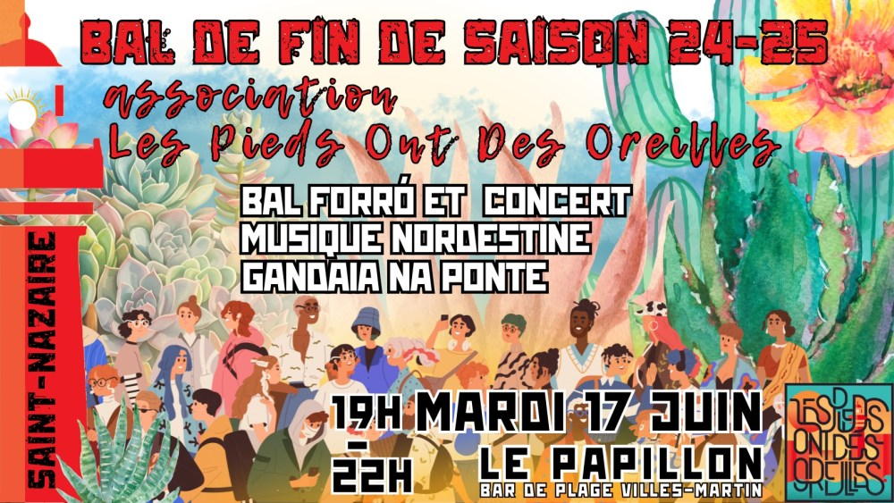

Fête de fin de saison des Podos

Venez fêter la fin de la saison 2024-25 et l’arrivée de l’été et (peut-être) des vacances ☀️
Au programme: bal forró, concert Gandaia na ponte, restitution de l’atelier de coco 💃🕺
On sera au Papillon, notre guinguette sur la plage de Villès, les pieds dans le sable 😀🏖️
Gratuit.
Vidéos
Les vidéos sont hébergées par YouTube. Elles ne se chargent, et YouTube n'est contacté, qu'au moment où vous cliquez sur lecture.